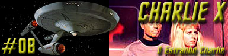
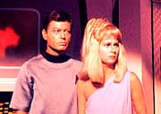
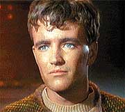
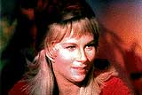

|
Série
Clássica
Temporada 1

Análise do episódio por
Salvador Nogueira

|

|
MANCHETE
DO EPISÓDIO Data Estelar: 1533.6.  Charles Evans, o único sobrevivente de uma expedição colonizadora enviada ao planeta Thasus, vem a bordo da Enterprise, transportado pela USS Antares. Quando o capitão Ramart, da Antares, tenta contatar Kirk para falar sobre Charlie, sua nave é subitamente destruída.Charlie mostra não só total insensibilidade pelo pessoal dos que o resgataram, como completa indiferença por suas mortes. Ele só se preocupa com que sua nova "família" goste dele e o aceite. Infelizmente, os hormônios adolescentes e sua vida pregressa solitária dificultaram este processo. Eventos estranhos ocorrem sempre que Charlie se enfurece - ele faz a ordenança Rand desaparecer quando ela recusa seu amor, quebra as pernas de Spock quando o vulcano tenta discipliná-lo, e provoca dor e desconforto em qualquer um que ele pensa estar rindo dele. Charlie exige que a Enterprise o leve ao planeta habitado mais próximo, mas Kirk teme que seu temperamento descontrolado e seus perigosos poderes sejam uma ameaça para qualquer civilização. Charlie toma o controle da nave, mas Kirk consegue sobrepujá-lo. Por fim, um rosto alienígena aparece na ponte. É um thasiano, a raça que ajudou Charlie a sobreviver sozinho no planeta e lhe deu seus poderes. Os thasianos perceberam que Charlie havia deixado Thasus e enviaram uma nave para interceptar a Enterprise. Apesar do desesperado desejo de Charlie em ficar, os thasianos levam o jovem solitário de volta a Thasus. Antes de partirem, os seres restauram a Enterprise e sua tripulação ao normal.
 "Charlie X" mostra com clareza as sensações e crises que compõem a adolescência, graças aos superpoderes de Charles Evans. Para exemplificar o conceito desenvolvido no episódio, é só lembrar da vontade que Charlie tem de que os outros sumam, o humor infantil e permeado de chacotas, mostrado quando o jovem faz com que Spock recite poemas infantis na ponte, sua paixão descontrolada pela ordennaça Rand e sua teimosia, ilustrada pelos momentos em que Charlie vai jogar xadrez e aprender a lutar.De quebra, o episódio busca demonstrar que a tendência à civilização não é inata no homem, mas adquirida pelos costumes. Charlie não viveu entre os humanos e por isso não sabe se comportar adequadamente, dando vazão a todos os seus sentimentos. A beleza da história está em sua imparcialidade narrativa. Nunca vemos Charlie como um "inimigo" no sentido mais comum, mas como uma criança atormentada pelos conflitos da adolescência com um fator complicador: não existe autoridade capaz de contê-lo. A primeira vista, podemos achar que "Charlie X" é mais uma versão de "poder absoluto corrompe absolutamente", já vista em "Where No Man Has Gone Before". Na verdade, desta vez, não é o poder que corrompe. Charlie já está corrompido por sua própria falta de autoconhecimento e de entendimento de sua própria espécie; o "poder" é só o instrumento que permite que ele demonstre suas fraquezas. Em geral, o episódio é bem estruturado, com grande conteúdo dramático. Mais uma vez, Jornada rompe com o estilo de séries da época e não apresenta um final no estilo "tudo acaba bem". Ao contrário, a conclusão é bem trágica.  Apesar de a tragédia ser a tônica do episódio, há momentos hilários, como a cena em que Kirk tenta explicar a Charlie por que não se deve bater em mulheres, ou a em que Spock recita poeminhas para o Dr. McCoy através do intercom.
Spock - "We are in the hands of
an adolescent."
História de Gene
Roddenberry Elenco: |